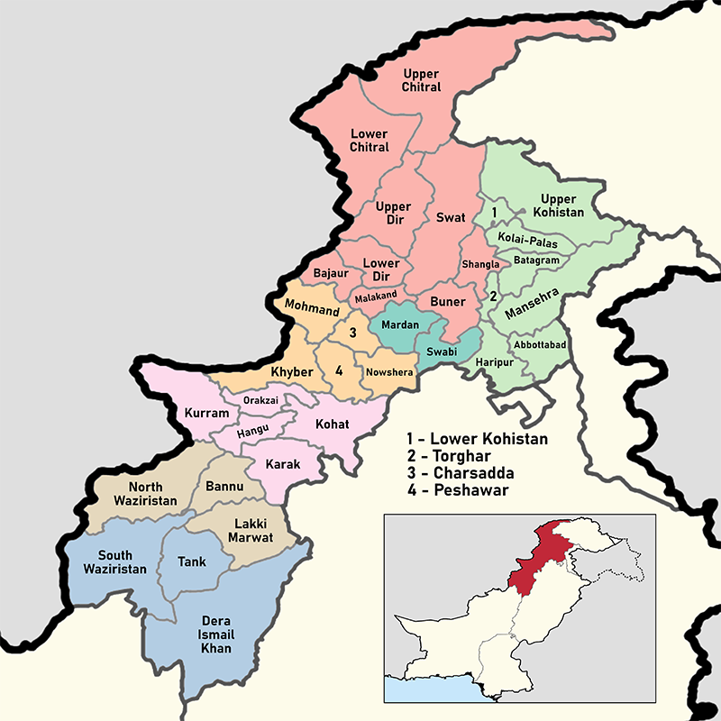

Pakistan
Tourism

About Pakistan
Pakistan is a country in South Asia with a rich history and culture. It's known for its beautiful landscapes, from the mountains of the north to the beaches in the south. People in Pakistan are very friendly and welcoming. Unfortunately, Pakistan also faces some challenges. There's poverty in some areas, and it's important to work together to improve everyone's lives. But there's also a lot of hope and progress being made. Pakistan has delicious food, amazing music, and talented people. It's a country with a lot to offer! Pakistan is a country in South Asia with a rich history and culture. It's known for its beautiful landscapes, from the mountains of the north to the beaches in the south. People in Pakistan are very friendly and welcoming. Unfortunately, Pakistan also faces some challenges. There's poverty in some areas, and it's important to work together to improve everyone's lives. But there's also a lot of hope and progress being made. Pakistan has delicious food, amazing music, and talented people. It's a country with a lot to offer!
Pakistan Provinces
About Punjab
Punjab is amazing! Explore historic forts, stunning gardens, and bustling bazaars. Taste delicious food, enjoy vibrant culture, and witness the famous Wagah Border ceremony. A Punjab tour is a journey through history and fun!

About KPK
KPK is a beautiful province with tall mountains, green valleys, and crystal-clear lakes. You can explore ancient ruins, go hiking, or just relax in nature. It's a place where you can have lots of adventures and learn about different cultures!

About Gilgit
Gilgit is a magical place with towering mountains, sparkling lakes,sparkling lakes,sparkling lakes,sparkling lakes, and friendly people. You can hike, camp, and explore ancient glaciers. It's a perfect spot for adventure lovers and those who want to escape the city!

About Sindh
Sindh is a colorful province with a rich history! It has beautiful beaches, and friendly people. You can explore ancient ruins, visit bustling cities, or relax in peaceful villages. Sindh is a place where you can learn about different cultures and have lots of fun!

About Balochistan
Balochistan is Pakistan's biggest province! It's like a giant playground with a beautiful coastline. Imagine exploring hidden caves, and even seeing stars so bright you'll feel like you can touch them. It's a place of adventure and wonder!
Pakistani Food
Pakistan presents a rich and varied culinary scene that showcases its deep cultural roots. The country features an array of delectable dishes, ranging from the zesty offerings of Punjab to the fragrant tastes of Sindh. Biryani, a beloved rice dish enriched with meat or vegetables, stands out as a national favorite. The succulent kebabs, whether prepared on a grill or in a tandoor, are essential for any food enthusiast. For dessert lovers, the rich and creamy treats such as gulab jamun and kheer are simply irresistible. The lively street food culture provides an exciting selection, including crispy samosas and flavorful chaat. With its robust spices and rich flavors, Pakistani cuisine promises a culinary journey that is sure to delight.